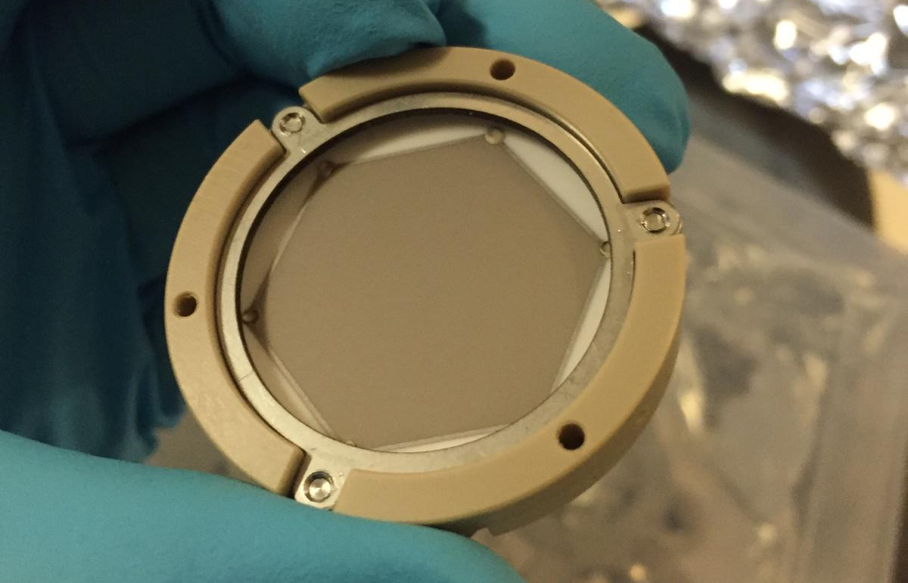
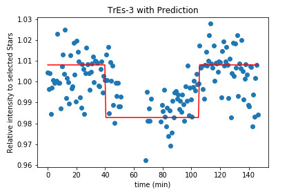

Research
Exoplanets exhibit a fascinating diversity: from small, rocky worlds to giant gaseous planets.
We are only beginning to understand their formation, atmospheres and climates, but we already have to admit that
the galaxy harbors much more diversity than we know from our own solar system.
With my work, I want to deepen our understanding of exoplanet atmospheres. I'm especially interested in cloud
formation, the interaction between gas phase and cloud chemistry, and the impact of clouds on the climate of exoplanets.
To combine clouds and climate, I use the global circulation model (GCM)
MITgcm which I combine with disequilibrium
chemistry and kinetic nucleation.
First author publications
Recent observations suggest the presence of clouds in exoplanet atmospheres but have also shown
that certain chemical species in the upper atmosphere might not be in chemical equilibrium.
Present and future interpretation of data from, for example, CHEOPS, JWST, PLATO and Ariel requires
a combined understanding of the gas-phase and the cloud chemistry. The goal of this work is to
calculate the two main cloud formation processes, nucleation and bulk growth, consistently from a
non-equilibrium gas-phase. The aim is further to explore the interaction between a kinetic gas-phase
and cloud micro-physics. The cloud formation is modelled using the moment method and kinetic nucleation
which are coupled to a gas-phase kinetic rate network. Specifically, the formation of cloud condensation
nuclei is derived from cluster rates that include the thermochemical data of (TiO2)N from N = 1 to 15.
The surface growth of 9 bulk Al/Fe/Mg/O/Si/S/Ti binding materials considers the respective gas-phase
species through condensation and surface reactions as derived from kinetic disequilibrium. The effect
of completeness of rate networks and the time evolution of the cloud particle formation is studied
for an example exoplanet HD 209458 b. A consistent, fully time-dependent cloud formation model in
chemical disequilibrium with respect to nucleation, bulk growth and the gas-phase is presented and
first test cases are studied. This model shows that cloud formation in exoplanet atmospheres is a
fast process. This confirms previous findings that the formation of cloud particles is a local
process. Tests on selected locations within the atmosphere of the gas-giant HD 209458 b show that
the cloud particle number density and volume reach constant values within 1s. The complex kinetic
polymer nucleation of TiO2 confirms results from classical nucleation models. The surface
reactions of SiO[s] and SiO2[s] can create a catalytic cycle that dissociates H2 to 2 H, resulting
in a reduction of the CH$_4$ number densities.
Nucleation is considered to be the first step in dust and cloud formation in the atmospheres of asymptotic giant branch
(AGB) stars, exoplanets, and brown dwarfs. In these environments dust and cloud particles grow to macroscopic sizes when
gas phase species condense onto cloud condensation nuclei (CCNs). Understanding the formation processes of CCNs and dust
in AGB stars is important because the species that formed in their outflows enrich the interstellar medium. Although widely
used, the validity of chemical and thermal equilibrium conditions is debatable in some of these highly dynamical astrophysical
environments. We aim to derive a kinetic nucleation model that includes the effects of thermal non-equilibrium by adopting different
temperatures for nucleating species, and to quantify the impact of thermal non-equilibrium on kinetic nucleation. Forward and backward
rate coefficients are derived as part of a collisional kinetic nucleation theory ansatz. The endothermic backward rates are
derived from the law of mass action in thermal non-equilibrium. We consider elastic collisions as thermal equilibrium drivers.
For homogeneous TiO2 nucleation and a gas temperature of 1250 K, we find that differences in the kinetic cluster temperatures
as small as 20 K increase the formation of larger TiO2 clusters by over an order of magnitude. An increase in cluster temperature
of around 20 K at gas temperatures of 1000 K can reduce the formation of a larger TiO2 cluster by over an order of magnitude. Our
results confirm and quantify the prediction of previous thermal non-equilibrium studies. Small thermal non-equilibria can cause a
significant change in the synthesis of larger clusters. Therefore, it is important to use kinetic nucleation models that include thermal
non-equilibrium to describe the formation of clusters in environments where even small thermal non-equilibria can be present.
We combine angular differential imaging (ADI) with spectral differential imaging (SDI) to investigate 3 different imaging techniques for spectral direct imaging: ASDI, SADI and CODI.
Using SPHERE/IFS observations we test the techniques on Beta Pictoris b, 51 Eridani b and HR 8799 e.
Our results show that combining SDI with ADI in general can help and that CODI achieves overall the best results. You can also read more about it in a well written blog post by David Gooding.
Co-author publications
In this paper, the potential detection of a nonmonotonic radial rotation profile in a low-mass lower giant star is reported. For most low- and intermediate-mass stars, the rotation on the main sequence seems to be close to rigid. KIC 9267654 however, seems to show a surface rotation rate that is faster than its bulk envelope rotation rate.
While doing service observation with HERMES at the Mercator telescope, observers can use 10% of the telescope time for their own observation. During one of my runs, I used my time to observe KIC 9267654.
We implemented full radiative transfer into MITgcm, creating expert/MITgcm. With it, we analysed
the temperature structure, wind structure and the dynamical heat transport of the two Hot Jupiters
HD 209458b and WASP-43b. We found that the deep layers of the two planets differ and further
observations of WASP-43b could help to explore dynamical processes in the deep atmosphere.
To analyse the impact of clouds on 3D exoplanets, implementing cloud formation into the MITgcm
is one of my core tasks for my PhD. This paper does not yet include cloud modeling, but it provides
the basis for future implementation.
Conferences & Workshops
The Graz-Vienna exoplanet scientist meeting is a bi-annual meeting between the exoplanet researchers of the University of Vienna and the IWF in Graz. The goal of the meeting is to strenghten the research connections within Austria. I presented our work on disequilbrium cloud formation and explaiend how we describe clouds in a microphysical way. It was amazing to see how my topic fitted well within all the others presented and I hope that some fruitfull collabroations will arise from this meeting!
The general assembly of the European Geosience Union (EGU) includes many different topics. From sessions on atmospheric science to geodynamics all the way to planetary sciences. This huge assembly of scientists from many different fields is a great opportunity to interchange knowledge between scientific fields. Even though it might be hard at times to follow the jargon, it is very worthwhile to learn how other scientists deal with similar problems. I presented in the session "Gas Giant System Exploration in the Solar System and Beyond". In my PICO presentation, I gave a quick overview over cloud fromation in exoplanet atmospheres followed by more indepth discussions in the discussion session afterwards.
Cloud modelers make up a small, but important, sub group within the exoplanet community. For Cloud Academy, many of the big and small names assemble in Les Houches for a week of all things clouds. From observations to theory, from exoplanets to brown dwarfs, many different topics were represented. With around 60 attendees, Cloud Academy was small enough to allow for in depth discussions with many different scientists, leading to fruitfull idiations and hopefully future collaborations. Druing the week in Les Houchs, I presented my work on the effect of thermal non-equilibrium on kinetic nucleation. Even though nucleation is only a small part of the cloud formation process, it fitted in well with other presentations on small but important details of cloud formation. If you missed my presentation or something was unclear, fell free to go back to my slides!
In the third instalment of the CHAMELEON school, we strengthend the collaboration wihtin our network by setting
up joint projects. Some of us worked on JWST proposel for cycle 2, others worked on paper drafts. For this school,
Helena Lecoq Molinos, Nanna Bach-MØller, Flavia Amido, Aaron Schneider, Jayatee Kanwar and myself combined
forces to study exoplanet atmospheres. With our combined expertise, we are able to model the temperature, wind, and
chemistry structure of a cloudy exoplanet. In the end we hope to determine what we can learn from a cloudy exoplanet
and what will be forever hidden behind the clouds.
At the end of the school, we held an inperson MEME (Massive Exoplanet Meme Exposition)
for the CHAMELEON students and IWF employee to enjoy.
The summer school "From Stardust to Extra-Solar Planets: Dynamics of Exoplanetary and Solar System Bodies"
included a broad range of lectures on celestial dynamics, asteroid impacts, planet formation, proto-planetary
discs and exoplanet atmosphere's. Everyday, 4 lectures were held allowing to cover this broad range of
topics in detail. In the afternoon, the students could present their work, connecting their work to the
lecturers as well as the other students.
On evenings and weekends, the school went beyond the purely scientific content. We could enjoy the outreach
lecture "Rock around the Moon", take part in a panel discussion on science communication and bond with the
other participants on excursions to castles, hikes and on whisky tours. Meeting so many engaged and talented
scientists from all around the world was an amazing experience and helped to set my own research into the
bigger picture. I was especially astonished by how much other fields were applicable to my research such
as the wind treatment in discs, evolution of late stage planets or the tidal deformation of solar system bodies.
Exoplanet 4 is an international conference about all things exoplanet. It covers fields from planet
formation to atmospheric characteristics and from models to observations. This conference was an
amazing opportunity to connect one's own research to the broader field of exoplanet science. The
conference featured various talks, poster presentations and splinter sessions.
I presented a poster on "Kinetic Nucleation in Thermal Non-Equilibrium", in which I explained the basic ideas behind kinetic nucleation, how it connects to exoplanet science and
the effects of thermal non-equilibrium. The corresponding paper is currently in preparation.
The colloquium "Gravitational waves and exoplanets" was a one day event in Brussels. It
included talks by Gabriela Gonzalez and Jo van den Brand about gravitational waves and by Michel
Mayor and Lisa Kaltenegger about exoplanet discovery and habitability. During the event, a poster
session was held in which Belgian universities presented their work.
I presented a poster on "Kinetic Nucleation in Thermal Non-Equilibrium". In this poster,
I explained the basic ideas behind kinetic nucleation, how it connects to exoplanet science and
the effects of thermal non-equilibrium. The corresponding paper is currently in preparation.
The second CHAMELEON school was all about the big picture. We started the week by splitting into groups
and discussing what picture items we would like to see explored in the near and far future. During the
rest of the week, we were tasked to investigate a specific instrument which could be used to answer one
of these questions. Our project was titled "Planets IN Extra-galactic Areas Providing Population Levels:
an Enormous Survey" - or PINEAPPLE for short. At the end of the week we presented our proposition in front
of a jury. We managed to convince them that exploring the population of extra-galactic planets is an important
science question and that PINEAPPLE would be a way to answer it.
On the practical side, the workshop featured a range of talks and a hands-on session. We learned about
"The Real World of Space Missions" from Peter Roelfsema, about "The Path to Habitable Worlds"
from Aki Roberge, about HabEx and LIFE from Pieter de Visser and about METIS from Bernhard Brandl. In the
hands-on session we learned how to use Pandexo and CASA. Additionally, we enjoyed a resilience training by Karen
Huizing.
CHAMELEON schools are training opportunities for early stage researchers within the CHAMELEON network. Using
the diversity of skills and knowledge within the network, the schools teach key elements from different fields.
In the first CHAMELEON school,
we had hands-on sessions on archival data, machine learning, ARCiS, ProDiMp and GGchem. Furthermore,
we learned about "Deep Learning and Kernel Machines" from Johan Suykens and about "How to keep women
(and men) in science" from Petra Rudolf. We also learned about 3D modelling, cloud formation, physical
structures and chemical structures.
Research Projects
GCMtoolKit
Aaron Schneider, Robin Bayens, and I started developing
GCMtoolKit to simplify working with
global circulation model (GCM) data. This library should allow to easily perform data handling,
data manipulation, and plotting of GCM output. Starting from MITgcm, the goal is to
support multiple GCMs, making the library a universal tool for the GCM community.
Are you also working with a GCM and would like to add it to our library? Please feel free to get in touch with us so that
you too can profit from GCMtoolKit.
Spectral characterization of companions around Young Suns (Master Thesis)
Even though direct imaging detection only gave us a handful of planets, they are crucial to study exoplanet characteristics. For my Master Thesis, I collaborated with the Leiden Observatory which hosted me for half a year. The aim was to utilise the spectral information available within SPHERE/IFS observation to improve the quality of direct imaging. To this end, we tested and implemented 4 different spectral differential imaging (SDI) techniques into PynPoint. Furthermore, we looked into ways to distinguish background stars from exoplanets. The results of this work have been published.
Implementation and Improvement of an MCP anode (Semester Project)

Measuring fundamental particles is no easy task. Previous to this work, an MCP anode had been designed to detect the number and position of positrons. In this project, we tested the and in 3 different set ups. These tests showed a critical design flaw in the anode. The currents within the anode after a positron impact can damage the thin carbon layer of the anode. To prepare future improvements of the anode, we performed simulations to calculate the maximum currents that can occur within the anode. The simulations also showed that it is difficult to balance precise position determination and robustness to strong currents.
To Measure a Transit with a 0.5m Telescope (Semester Project)

Every astronomer living in a big city knows the frustration of starless skies. In this project, we aimed to determine whether an exoplanetary transit can be measured in the middle of Zurich with the 0.5m Telescope at Hoengerberg. Collaborating with Adrian Gheorghe, we developed Python routines to accurately measure the brightness of stars. During a period of 6 months, we conducted 6 observation of stars with known Hot Jupiter transits. In the end, we were able to extract two reasonable transit light curves. One of these was later used in a follow up study to confirm the exoplanetary transit.